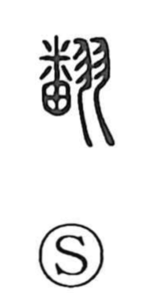

翻

Uncategorized
Kun: hirugaeru, hirugaesu | On: hon
to turn over ・ to flutter ・ to translate
Explanation
Shirakawa explains 翻 as a phonetic–semantic compound. The semantic base is 羽, “feathers,” evoking the light, flapping motion of wings. The phonetic element 番—originally drawn as the sole of an animal’s paw—provides the sound hon and already suggests a wavering or fluttering motion, so together they picture something that flips or flutters. From this core image the character came to mean to turn over or to flutter, and by extension to change one’s mind, to reprint a text, and to translate it into another language. An older variant form is 飜.